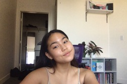

<!DOCTYPE html>
<html lang="en">

<head>

  <meta charset='UTF-8'>
  <meta name="viewport" content="width=device-width, initial-scale=1, shrink-to-fit=no">
  <link rel="shortcut icon" href="img/koya.ico">
  <meta name="description" content="Hello! I am a fist-year Pre-Business student looking to concentrate in Mangement">
  <meta name="author" content="862194517">

  <title>Pearl Supapisal - Pre-Business</Mangement>

  <!-- Bootstrap core CSS -->
  <link href="vendor/bootstrap/css/bootstrap.min.css" rel="stylesheet">

  <!-- Custom fonts for this template -->
  <link href="https://fonts.googleapis.com/css?family=Saira+Extra+Condensed:500,700" rel="stylesheet">
  <link href="https://fonts.googleapis.com/css?family=Muli:400,400i,800,800i" rel="stylesheet">
  <link href="vendor/fontawesome-free/css/all.min.css" rel="stylesheet">

  <!-- Custom styles for this template -->
  <link href="css/resume.min.css" rel="stylesheet">

</head>

<body id="page-top">
  <nav class="navbar navbar-expand-lg navbar-dark bg-primary fixed-top" id="sideNav">
    <a class="navbar-brand js-scroll-trigger" href="#page-top">
      <span class="d-block d-lg-none">Pearl Supapisal</span>
      <span class="d-none d-lg-block">
        
      </span>
    </a>
    <button class="navbar-toggler" type="button" data-toggle="collapse" data-target="#navbarSupportedContent" aria-controls="navbarSupportedContent" aria-expanded="false" aria-label="Toggle navigation">
      <span class="navbar-toggler-icon"></span>
    </button>
    <div class="collapse navbar-collapse" id="navbarSupportedContent">
      <ul class="navbar-nav">
        <li class="nav-item">
          <a class="nav-link js-scroll-trigger" href="#about">About</a>
        </li>
        <li class="nav-item">
          <a class="nav-link js-scroll-trigger" href="#experience">Experience</a>
        </li>
        <li class="nav-item">
          <a class="nav-link js-scroll-trigger" href="#education">Education</a>
        </li>
        <li class="nav-item">
          <a class="nav-link js-scroll-trigger" href="#portfolio">Portfolio</a>
        </li>
      </ul>
    </div>
  </div>
  </nav>

  <div class="container-fluid p-0">

    <section class="resume-section p-3 p-lg-5 d-flex align-items-center" id="about">
      <div class="w-100">
        <h1 class="mb-3">Pearl Supapisal 
        </h1>
        <div class="subheading mb-5">Business Administration📚</div>
        <p class="lead mb-4">Hello! My name is Pearl Supapisal and I am a first-year business student at the University of California, Riverside. In two years I plan to attend the School of Business at my school to pursue management. My family owns two Thai restaurants and my future goal is to expand that restaurant all over the world. However, a bigger goal I have is to open my own bakery and sweets shop. I am very passionate about baking and desserts, so I want to pursue my own plan while helping my parents also. My biggest role model in the business field is my dad. My dad is a single dad trying to raise a child on his own. He worked long hours and budgeted severely to get me where I am today. Everything that I do in life is for my dad and to let him one day live comfortably without having to work. On a regular day, I wake up at 7am to workout (because I am a gym rat) and then start school at 9. I go into the restaurant everyday to help with backstock or staffing, so it keeps me relatively busy. In my free time I like to hike or watch anime! I feel like anime has affected me a lot in my life. It taught me patience, trust, and grit. These are the three of my strongest qualities that I could bring into any workforce. I love to hike because it is the only time I get to just breathe and be with myself. The climb up is difficult and sometimes I just want to give up, but once I get to the top all that work is worth is. I feel like that's how life is too. We do all these things that we don’t want to do to get to what we want. But once we get to the top, all that work kind of dissolves. When it comes to work, I have worked at four places. My first job was at Plato's Closet as a sales associate which introduced me to the world of customer service. This then led me to ShareTea which taught me how to work fast and efficiently, followed by my parents' restaurant that I have to get groceries and do backstock for which taught me the insider to owning a restaurant. Lastly, I have recently picked up tutoring for 8th grade math students. This really taught me patience and how to control the room. Leadership is a big quality that people look for, so as a Leo I think I am qualified for that position. Something that I live by in life is to just do it (like NIKE said). I am not afraid to make decisions that might benefit or harm me because I'll never know till I try. Life is all about trying new things and constantly growing because if you don’t grow in life, there is no purpose. I love to constantly learn and better myself day by day.   
<br><br>

        <br>Hello! My name is Pearl Supapisal and I am a first-year business student at the University of California, Riverside. In two years I plan to attend the School of Business at my school to pursue management. My family owns two Thai restaurants and my future goal is to expand that restaurant all over the world. However, a bigger goal I have is to open my own bakery and sweets shop. I am very passionate about baking and desserts, so I want to pursue my own plan while helping my parents also. My biggest role model in the business field is my dad. My dad is a single dad trying to raise a child on his own. He worked long hours and budgeted severely to get me where I am today. Everything that I do in life is for my dad and to let him one day live comfortably without having to work. On a regular day, I wake up at 7am to workout (because I am a gym rat) and then start school at 9. I go into the restaurant everyday to help with backstock or staffing, so it keeps me relatively busy. In my free time I like to hike or watch anime! I feel like anime has affected me a lot in my life. It taught me patience, trust, and grit. These are the three of my strongest qualities that I could bring into any workforce. I love to hike because it is the only time I get to just breathe and be with myself. The climb up is difficult and sometimes I just want to give up, but once I get to the top all that work is worth is. I feel like that's how life is too. We do all these things that we don’t want to do to get to what we want. But once we get to the top, all that work kind of dissolves. When it comes to work, I have worked at four places. My first job was at Plato's Closet as a sales associate which introduced me to the world of customer service. This then led me to ShareTea which taught me how to work fast and efficiently, followed by my parents' restaurant that I have to get groceries and do backstock for which taught me the insider to owning a restaurant. Lastly, I have recently picked up tutoring for 8th grade math students. This really taught me patience and how to control the room. Leadership is a big quality that people look for, so as a Leo I think I am qualified for that position. Something that I live by in life is to just do it (like NIKE said). I am not afraid to make decisions that might benefit or harm me because I'll never know till I try. Life is all about trying new things and constantly growing because if you don’t grow in life, there is no purpose. I love to constantly learn and better myself day by day.   
<br>

        Hello! My name is Pearl Supapisal and I am a first-year business student at the University of California, Riverside. In two years I plan to attend the School of Business at my school to pursue management. My family owns two Thai restaurants and my future goal is to expand that restaurant all over the world. However, a bigger goal I have is to open my own bakery and sweets shop. I am very passionate about baking and desserts, so I want to pursue my own plan while helping my parents also. My biggest role model in the business field is my dad. My dad is a single dad trying to raise a child on his own. He worked long hours and budgeted severely to get me where I am today. Everything that I do in life is for my dad and to let him one day live comfortably without having to work. On a regular day, I wake up at 7am to workout (because I am a gym rat) and then start school at 9. I go into the restaurant everyday to help with backstock or staffing, so it keeps me relatively busy. In my free time I like to hike or watch anime! I feel like anime has affected me a lot in my life. It taught me patience, trust, and grit. These are the three of my strongest qualities that I could bring into any workforce. I love to hike because it is the only time I get to just breathe and be with myself. The climb up is difficult and sometimes I just want to give up, but once I get to the top all that work is worth is. I feel like that's how life is too. We do all these things that we don’t want to do to get to what we want. But once we get to the top, all that work kind of dissolves. When it comes to work, I have worked at four places. My first job was at Plato's Closet as a sales associate which introduced me to the world of customer service. This then led me to ShareTea which taught me how to work fast and efficiently, followed by my parents' restaurant that I have to get groceries and do backstock for which taught me the insider to owning a restaurant. Lastly, I have recently picked up tutoring for 8th grade math students. This really taught me patience and how to control the room. Leadership is a big quality that people look for, so as a Leo I think I am qualified for that position. Something that I live by in life is to just do it (like NIKE said). I am not afraid to make decisions that might benefit or harm me because I'll never know till I try. Life is all about trying new things and constantly growing because if you don’t grow in life, there is no purpose. I love to constantly learn and better myself day by day.   

        </p>
        <div class="social-icons">
          <a target="_blank" id="socialicon-1" href="https://www.linkedin.com/in/pearl-supapisal-8437921b8/">
            <i class="fab fa-linkedin-in"></i>
          </a>
          <a target="_blank" id="socialicon-2" href="https://github.com/PearlSupapisal">
            <i class="fab fa-github"></i>
          </a>
          <a target="_blank" id="socialicon-3" href="https://twitter.com/Pearl_Supapisal">
            <i class="fab fa-twitter"></i>
          </a>
          <a target="_blank" id="socialicon-4" href="mailto:pearlsupapisal@gmail.com">
            <i class="fa fa-envelope"></i>
          </a>
        </div>
      </div>
    </section>

    <hr class="m-0">

    <section class="resume-section p-3 p-lg-5 d-flex justify-content-center" id="experience">
      <div class="w-100">
        <h2 class="mb-5">Experience</h2>

        <div class="resume-item d-flex flex-column flex-md-row justify-content-between mb-5 experience">
          <div class="resume-content">
            <h3 class="mb-0">Barista</h3>
            <div class="subheading mb-3"><a target="_blank" href="https://www.1992sharetea.com/">ShareTea</a></div>
            <p>
              • Learned how to work under pressure X<br> 
              • Made over 1000 drinks a day <br>
              • Experince with customers and how to deal with the tough ones<br>
            </p>
          </div>
          <div class="resume-date text-md-right">
            <span class="text-primary">March 2019 - Present</span>
          </div>
        </div>

        <div class="resume-item d-flex flex-column flex-md-row justify-content-between mb-5 experience">
          <div class="resume-content">
            <h3 class="mb-0">Sales Associate</h3>
            <div class="subheading mb-3"><a target="_blank" href="https://www.platoscloset.com/">Plato's Closet</a></div>
            <p>
              • Had to help customers style their clothing<br>
              • Was always on the main floor to talk to customers and make sure they found what they need<br>
            </p>
          </div>
          <div class="resume-date text-md-right">
            <span class="text-primary">March 2017 - March 2019</span>
          </div>
        </div>


        <div class="resume-item d-flex flex-column flex-md-row justify-content-between mb-5 experience">
          <div class="resume-content">
            <h3 class="mb-0">AVID Tutor</h3>
            <div class="subheading mb-3"><a target="_blank" href="https://ucr.edu">Vista Heights Middle School</a></div>
            <p>
            • Helped failing students succeed<br>
            • Created bonds with the kids to gain their trust<br>
            • Made fun powerpoints to help the kids stay involved<br>
            • Gave the kids a chance to be themselves in a safe enviroment<br>

          </p>
          </div>
          <div class="resume-date text-md-right">
            <span class="text-primary">January 2011 - January 2016</span>
          </div>
        </div>


      </div>

    </section>

    <hr class="m-0">

    <section class="resume-section p-3 p-lg-5 d-flex align-items-center" id="education">
      <div class="w-100">
        <h2 class="mb-5">Education</h2>

        <div class="resume-item d-flex flex-column flex-md-row justify-content-between mb-5 education">
          <div class="resume-content">
            <h3 class="mb-0">UC Riverside</h3>
            <div class="subheading mb-3">Bachelors of Business Administration</div>
          </div>
          <div class="resume-date text-md-right">
            <span class="text-primary">October 2020 - June 2024</span>
          </div>
        </div>

        <div class="resume-item d-flex flex-column flex-md-row justify-content-between mb-5 education">
          <div class="resume-content">
            <h3 class="mb-0">University of California Riverside</h3>
            <div class="subheading mb-3">Postgraduate Certificate in Business Management</div>
            <div>Project Management</div>
          </div>
          <div class="resume-date text-md-right">
            <span class="text-primary">June 2017</span>
          </div>
        </div>

        <div class="resume-item d-flex flex-column flex-md-row justify-content-between mb-5 education">
          <div class="resume-content">
            <h3 class="mb-0">University of California Riverside</h3>
            <div class="subheading mb-3">Business Administration</div>
            <div>Information Systems</div>
          </div>
          <div class="resume-date text-md-right">
            <span class="text-primary">August 2012 - May 2016</span>
          </div>
        </div>

      </div>
    </section>

    <hr class="m-0">

    <section class="resume-section p-1 p-lg-5 d-flex align-items-center" id="portfolio">
      <div class="w-100">
        <h2 class="mb-5">Portfolio</h1>
        <center>
            
            <br>
            
            <br>
        </center>
      </div>
    </section>

    <hr class="m-0">
    <center>&copy; <script type="text/javascript">
  document.write(new Date().getFullYear());
  </script> John Doe</center><br>
  </div>
  <!-- Bootstrap core JavaScript -->
  <script src="vendor/jquery/jquery.min.js"></script>
  <script src="vendor/bootstrap/js/bootstrap.bundle.min.js"></script>

  <!-- Plugin JavaScript -->
  <script src="vendor/jquery-easing/jquery.easing.min.js"></script>

  <!-- Custom scripts for this template -->
  <script src="js/resume.min.js"></script>
</body>
</html>
